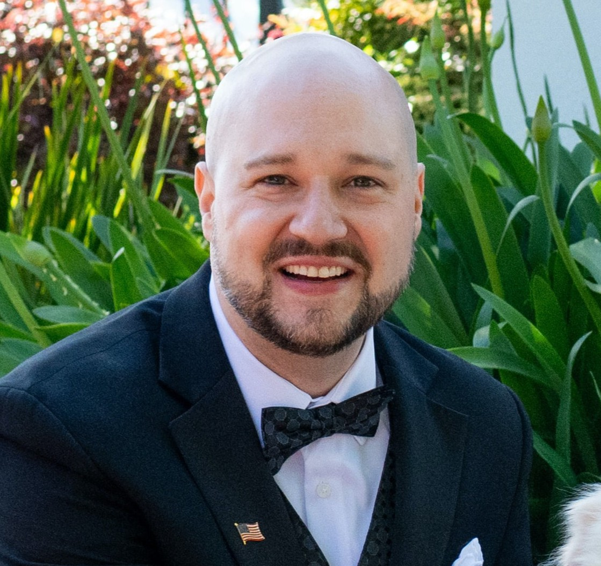

Principal Scientist · Mass Spectrometry · Drug Discovery
Alexander G. Cioffi, Ph.D.
I use mass spectrometry-based proteomics to answer the questions that move drug programs forward. I have over 9 years of experience building, optimizing, and deploying critical-path assays across covalent and induced-proximity programs, from high-throughput RapidFire-MS screens to IND-enabling analysis of clinical samples.
What I do
Expertise
My work sits where chemical biology meets analytical rigor: designing proteomics experiments that produce decision-quality data, and leading the people and cross-functional collaborations that act on it.
Toolkit
Platforms & software
Instruments: Orbitrap Lumos/Eclipse, Q-ToF, RapidFire-MS
Software: Skyline, DIA-NN, Proteome Discoverer, MaxQuant, Biopharma Finder, BioConfirm, Masspike, Python (pandas, NumPy, SciPy, matplotlib), and R
Cell-based assays: BRET, AlphaLISA, automated high-throughput formats
Career
Experience
-
2025 – 2026Principal Scientist, Vulcan Bio
Led a chemoproteomic cellular target-engagement platform (goDig) to drive hit-to-lead decisions across multiple programs; built automated high-throughput cellular assays (BRET, AlphaLISA) for induced-proximity programs.
-
2019 – 2025Scientist I → Senior Scientist, Frontier Medicines
Established the RapidFire-MS screening platform for hit ID; supervised two direct reports across three targeted protein degradation projects from hit ID through lead generation; ran IND-enabling studies measuring p53 Y220C target engagement in patient clinical samples.
-
2017 – 2019Postdoctoral Researcher, UC Berkeley (Nomura Lab)
Applied chemoproteomic covalent-ligand screening to discover a functional ligandable cysteine within an intrinsically disordered region of MYC.
-
2011 – 2017Ph.D., Biochemistry, University of Illinois Urbana-Champaign (Burke Lab)
Small molecules that restore physiology in ion-transporter deficiencies ("molecular prosthetics"); work published in Nature, Science, JACS, and Nature Chemical Biology; co-inventor on three patent applications.
-
2007 – 2011B.S., Chemistry, Saint Louis University — Summa Cum Laude
Get in touch
Contact
Email: acioffi3@gmail.com
LinkedIn: linkedin.com/in/AlexCioffi
GitHub: github.com/AlexCioffi